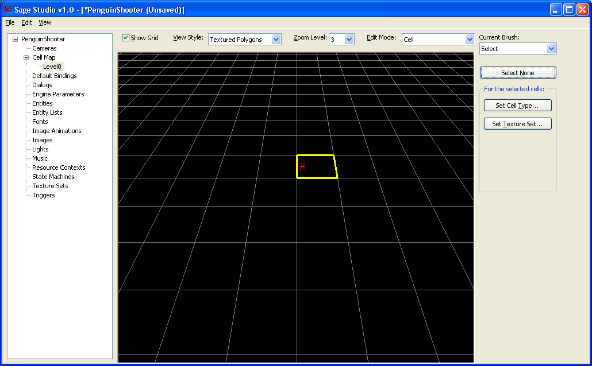
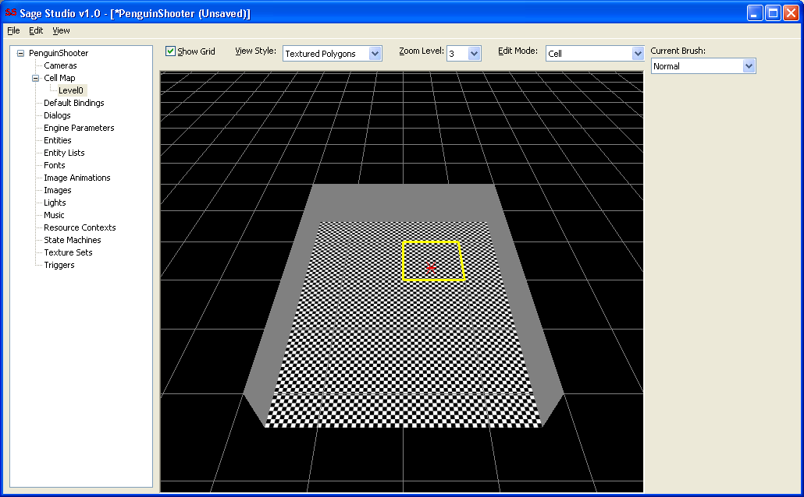
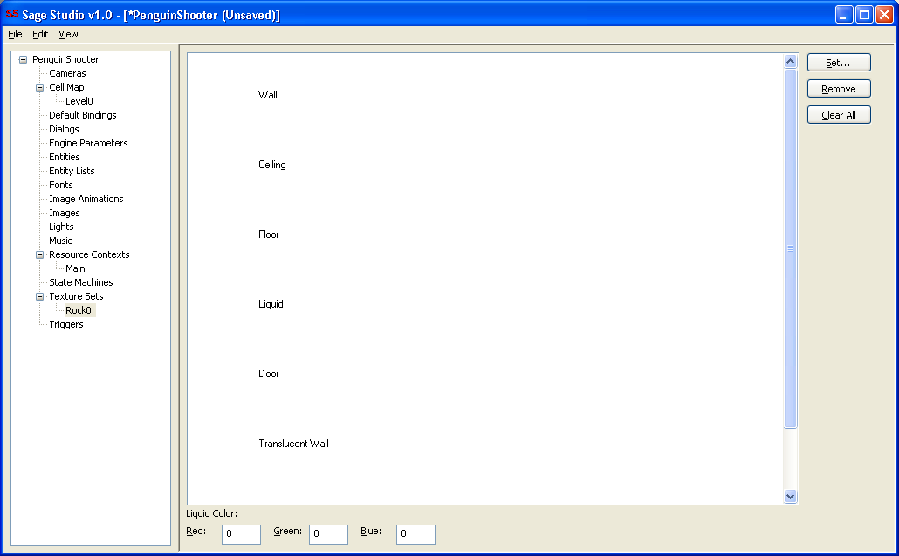
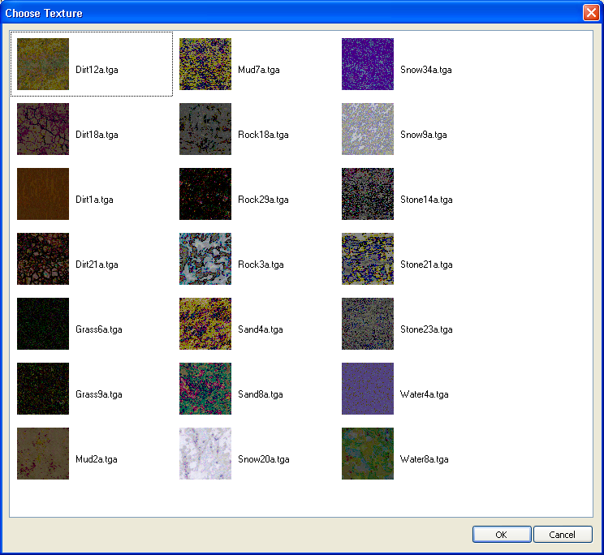
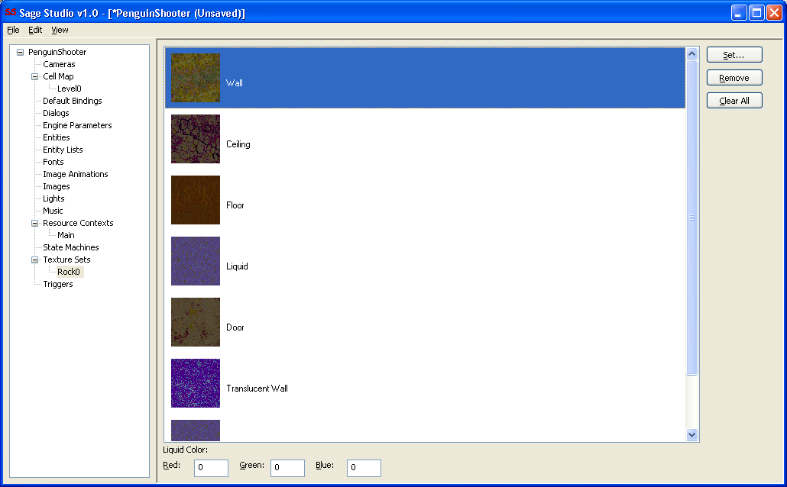
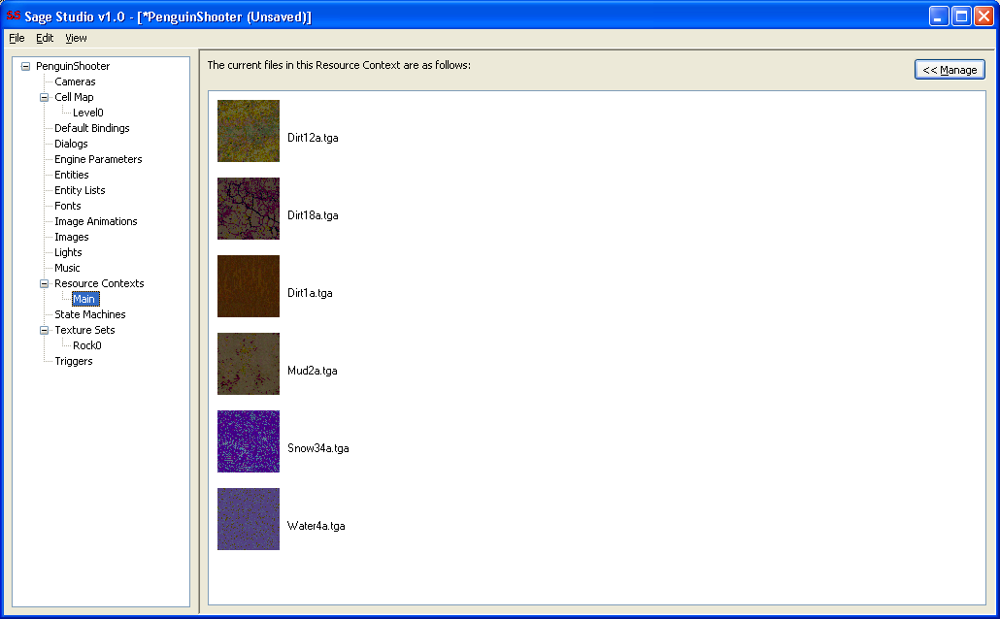
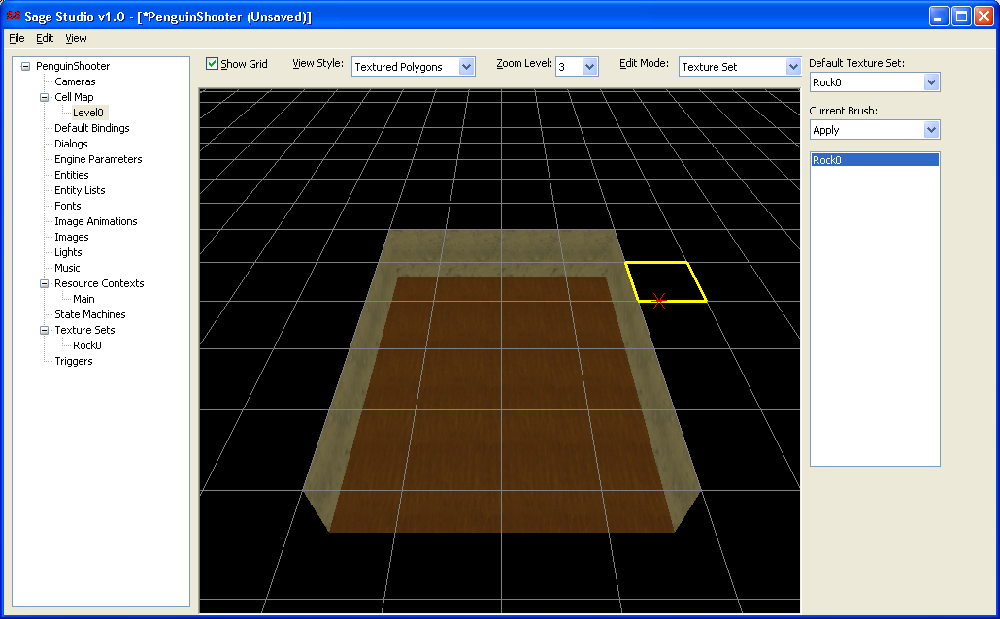
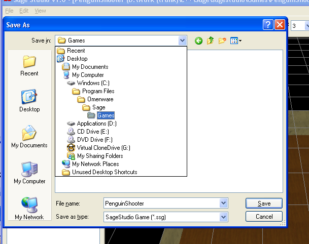
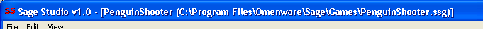

To create a map right click on Cell Map and click Insert. Call your map whatever you like, I called mine Level0. Once you click OK from the dialog a map with the name you entered will be inserted into the tree and selected. This causes the main view to change to the Cell Map Editor, shown here:

We'll create our map using the Brush technique. Change the Current Brush drop list on the right hand side dialog bar to Normal. Now drag the mouse cursor in the main 3D view to place cells of type Normal. Here's what I created:

You'll immediately notice that a checkerboard Texture was applied to your cells. This happened because no Texture Sets exist yet, so SageStudio used the Default Texture. Let's create a Texture Set and apply it to our cells. Before we can do that however, we must create a Resource Context, because this is the container that holds the Textures used by a Texture Set.
From the Game Manager, right click on Resource Contexts and click Insert. Call your Resource Context Main and press Enter.
Now right click on Texture Sets in Game Manager and click Insert. Type Rock0 for the name. You'll notice that your Resource Context is selected in the droplist. This is because it's the only one you have at the moment. Press Enter to accept the dialog. The Texture Set Editor is displayed in the main view.

This editor will allow you to assign a Texture to each type of polygon that SageStudio will create for your cells. Double click the listbox item named Wall to open the Choose Texture dialog, shown here:

This dialog lists all the Textures from your Content Directory's subdirectory named Textures. Double click any Texture to assign that Texture to the Wall polygon type. Double click every other polygon type and assign Textures. Your Texture Set should look something like this:

From the Game Manager, left click on your Resource Context named Main. It should look something like the following:

You'll notice that some Textures have been added to your Resource Context. When you assigned Textures in your Texture Set, SageStudio automatically placed them into your Resource Context for you. Now left click your map named Level0 from the Game Manager. We'll now use our newly created Texture Set to paint our map cells.
Change the Edit Mode droplist at the top of the main view to Texture Set. Change the Current Brush droplist to Apply. Select your Texture Set named Rock0 from the list. You may now drag the mouse cursor over the cells in your world to apply Rock0 to them. You should have something like this:

Let's save the game now. Choose Save from the File menu, or press Ctrl+S.
It is very important to save your game in the Games subdirectory, shown here:

You'll notice that SageStudio filled in the name of the file for you, which is PenguinShooter in my case, so just hit Enter to save the file. SageStudio updates the title bar of the main window to reflect your game's filename.

That's your basic map done. In order for SageEngine to run your map, you need to create a State Machine that tells SageEngine what to do. Specifically, you need to tell SageEngine to run a map, and tell it which map that is. This is pretty easy to do, read about it in Creating a State Machine to Control SageEngine
Back to the Index